Справочник по Angular и React · модуль 3 · автоматизация
А3
Ночная проверка сайтов
и оповещение
На этой странице ночная проверка из главы 3.4 начинает присылать сообщения в Telegram. Бот тот же, что в автоматизации модуля 1; его токен и номер чата хранятся в секретах репозитория monitoring и попадают в скрипт через переменные окружения. Скрипт сравнивает новую проверку с прошлой и пишет только об изменениях: какой сайт перестал открываться и какой снова работает. Проверка на двух запусках: с новым неработающим сайтом сообщение приходит, без изменений — нет.
- Категория
- Автоматизация, GitHub Actions, Telegram
- Уровень
- Начальный
- Что понадобится
- Репозиторий
monitoringпосле главы 3.4, бот Telegram, его токен и номер чата со страницы «Автоматизация» модуля 1 - Результат
- Когда сайт из списка перестаёт открываться или снова работает, после ночной проверки приходит сообщение в Telegram
§1Как устроено оповещение
РазбираемсяКогда отправлять сообщение
После главы 3.4 о сломанном сайте можно узнать, только открыв монитор. Оповещение присылает новость само: ночная проверка вызывает метод sendMessage Telegram Bot API, как процесс n8n в модуле 1, только запрос отправляет скрипт check.mjs на машине GitHub.
Если писать о каждом неработающем сайте, «Старый проект» с кодом 404 будет приходить каждую ночь, и сообщения перестанут замечать. Поэтому скрипт сравнивает две последние проверки и пишет только об изменениях:
| Прошлая проверка | Новая проверка | Сообщение |
|---|---|---|
| работает | работает | нет |
| работает или сайта ещё не было | не открывается | 🔴 Не открывается |
| не открывается | не открывается | нет |
| не открывается | работает | 🟢 Снова работает |
Пожарная сигнализация срабатывает один раз, когда появился дым, и молчит, пока идёт ремонт после пожара. О том, что ремонт закончен, сообщают отдельно.
Для отправки скрипту нужны токен бота и номер чата. В коде их не пишут: репозиторий публичный, и любой, кто увидит токен, сможет писать от имени бота. Их хранят в секретах репозитория — зашифрованных значениях, которые GitHub передаёт конвейеру при запуске и не показывает больше нигде.
Путь от секрета до сообщения
Значения секретов есть только в настройках репозитория и в памяти запущенного шага. В коде, истории Git и журнале запуска их нет.
Сначала — код: функция отправки и сравнение проверок.
§2Сообщение из скрипта
ДелаемДополняем скрипт и конвейер
- Замените check.mjs
Откройте папку
monitoringв VS Code и выполните в терминалеgit pull: в репозитории есть коммиты бота. Замените содержимоеscripts/check.mjs. Добавлены функцияnotify(строки 6–18) и сравнение с прошлой проверкой в конце файла (строки 47–64).monitoring/scripts/check.mjs import { readFile, writeFile } from 'node:fs/promises' const SITES = 'public/data/sites.json' const RESULTS = 'public/data/results.json' async function notify(text) { const { TELEGRAM_TOKEN, TELEGRAM_CHAT_ID } = process.env if (!TELEGRAM_TOKEN || !TELEGRAM_CHAT_ID) { console.log('Секреты Telegram не заданы, сообщение не отправлено') return } const response = await fetch(`https://api.telegram.org/bot${TELEGRAM_TOKEN}/sendMessage`, { method: 'POST', headers: { 'Content-Type': 'application/json' }, body: JSON.stringify({ chat_id: TELEGRAM_CHAT_ID, text }), }) console.log('Telegram:', response.status) } const sites = JSON.parse(await readFile(SITES, 'utf8')) let history = [] try { history = JSON.parse(await readFile(RESULTS, 'utf8')).history } catch { // Первый запуск: файла с результатами ещё нет. } const checks = [] for (const site of sites) { const check = { id: site.id, ok: false, status: 0, ms: 0, error: '' } const start = Date.now() try { const response = await fetch(site.url, { signal: AbortSignal.timeout(15000) }) check.status = response.status check.ok = response.ok } catch (e) { check.error = e.message } check.ms = Date.now() - start console.log(`${check.ok ? 'OK ' : 'FAIL'} ${check.status} ${check.ms} мс ${site.url}`) checks.push(check) } history = [{ time: new Date().toISOString(), checks }, ...history].slice(0, 30) await writeFile(RESULTS, JSON.stringify({ history }, null, 2) + '\n') const previous = history[1] const changes = [] for (const check of checks) { const site = sites.find((s) => s.id === check.id) const before = previous?.checks.find((c) => c.id === check.id) if (!check.ok && (before === undefined || before.ok)) { changes.push(`🔴 Не открывается: ${site.name} · ${check.status || check.error}\n${site.url}`) } if (check.ok && before !== undefined && !before.ok) { changes.push(`🟢 Снова работает: ${site.name}\n${site.url}`) } } if (changes.length === 0) { console.log('Изменений нет, сообщение не отправлено') } else { await notify(`Ночная проверка сайтов\n\n${changes.join('\n\n')}`) }
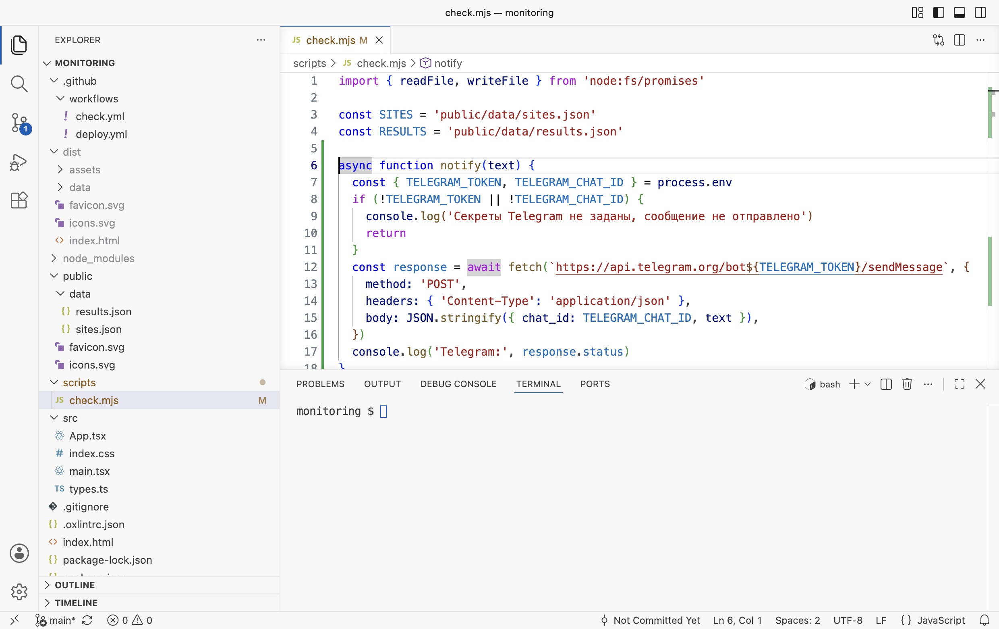
Функция notify 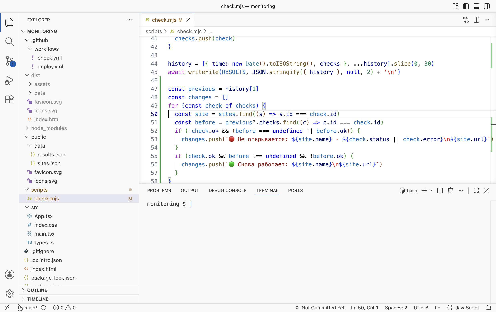
Сравнение с прошлой проверкой - Передайте секреты шагу
В
.github/workflows/check.ymlпосле строки 24run: node scripts/check.mjsдобавьте три строки. Отступenv— как уrun.check.yml · строки 23–27 - name: Проверить сайты run: node scripts/check.mjs env: TELEGRAM_TOKEN: ${{ secrets.TELEGRAM_TOKEN }} TELEGRAM_CHAT_ID: ${{ secrets.TELEGRAM_CHAT_ID }}
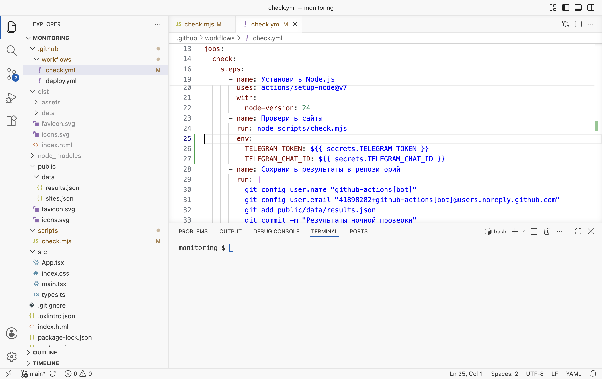
Секреты в переменных окружения шага - Добавьте сайт для проверки
Чтобы проверить оповещение, не дожидаясь, пока сломается настоящий сайт, добавьте в
public/data/sites.jsonадрес, которого не существует. Не забудьте запятую в конце предыдущей строки.sites.json · строка 8 { "id": "monitoring-test", "name": "Проверка оповещения", "url": "https://maximbytecamp.github.io/monitoring-test/" }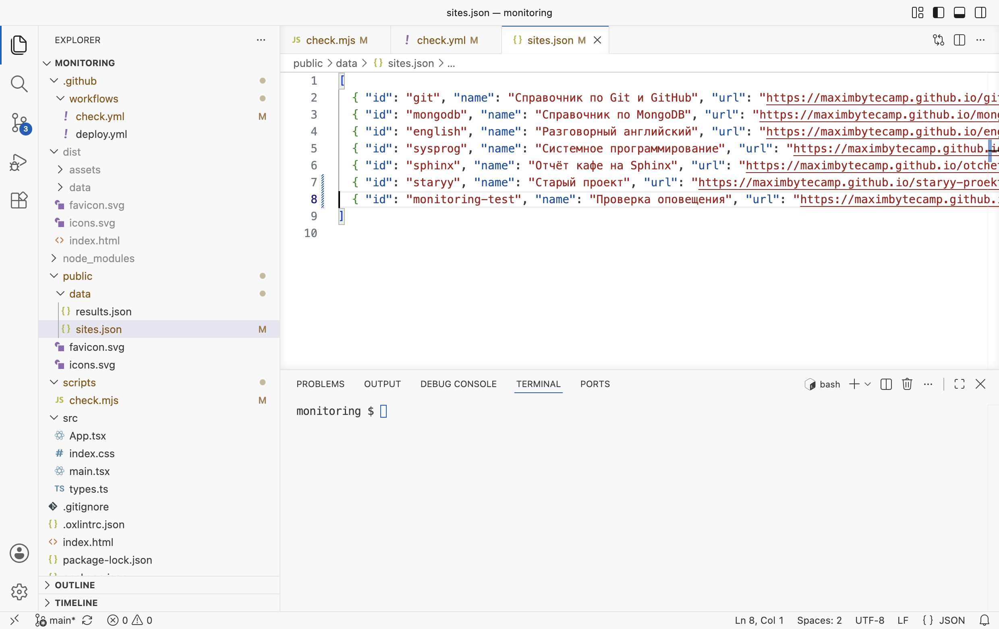
Тестовый сайт в списке
РазбираемсяНовые части скрипта
async function notify(text) { const { TELEGRAM_TOKEN, TELEGRAM_CHAT_ID } = process.env 1 if (!TELEGRAM_TOKEN || !TELEGRAM_CHAT_ID) { 2 console.log('Секреты Telegram не заданы, сообщение не отправлено') return } const response = await fetch(`https://api.telegram.org/bot${TELEGRAM_TOKEN}/sendMessage`, { 3 method: 'POST', headers: { 'Content-Type': 'application/json' }, body: JSON.stringify({ chat_id: TELEGRAM_CHAT_ID, text }), 4 }) console.log('Telegram:', response.status) }
- 1
process.env— объект с переменными окружения процесса Node.js. Секреты попадают туда из разделаenvшага. Распаковка достаёт два значения по именам. - 2
На вашем компьютере переменных нет. Скрипт пишет об этом в консоль и не падает: проверку можно запускать и локально.
- 3
Адрес метода Bot API: токен стоит после
bot, как в адресахgetUpdatesиз автоматизации модуля 1. - 4
Тело запроса — JSON с номером чата и текстом. Код ответа
200в журнале значит, что Telegram принял сообщение.
const previous = history[1] 1 const changes = [] for (const check of checks) { const site = sites.find((s) => s.id === check.id) const before = previous?.checks.find((c) => c.id === check.id) 2 if (!check.ok && (before === undefined || before.ok)) { 3 changes.push(`🔴 Не открывается: ${site.name} · ${check.status || check.error}\n${site.url}`) } if (check.ok && before !== undefined && !before.ok) { 4 changes.push(`🟢 Снова работает: ${site.name}\n${site.url}`) } } if (changes.length === 0) { 5 console.log('Изменений нет, сообщение не отправлено') } else { await notify(`Ночная проверка сайтов\n\n${changes.join('\n\n')}`) }
- 1
Новая проверка уже записана в начало истории (строка 44), поэтому прошлая — второй элемент,
history[1]. При самом первом запуске его нет, иpreviousравенundefined. - 2
Результат того же сайта в прошлой проверке.
?.защищает от отсутствия прошлой проверки,findвозвращаетundefined, если сайта в ней не было. - 3
Сайт не открывается сейчас, а раньше работал или его не проверяли — новая неисправность. Так новый сайт с ошибкой в адресе сразу попадает в сообщение.
- 4
Сайт работает, а в прошлый раз не открывался — восстановился.
- 5
Изменений нет — сообщения нет, в журнал пишется строка. Иначе все изменения собираются в одно сообщение через пустую строку.
Запись ${{ secrets.TELEGRAM_TOKEN }} в check.yml — выражение GitHub Actions: перед запуском шага GitHub подставляет вместо него значение секрета. В журнале запуска это значение заменяется на ***.
Код ссылается на два секрета. Их нужно создать в репозитории до отправки.
§3Секреты репозитория
ДелаемСоздаём TELEGRAM_TOKEN и TELEGRAM_CHAT_ID
- Откройте раздел секретов
В репозитории
monitoringоткройте Settings (1) → Secrets and variables → Actions (2) и нажмите New repository secret (3).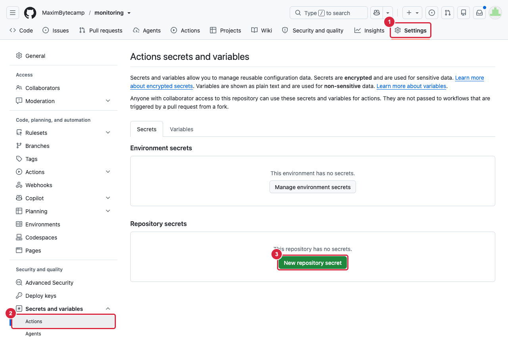
Секретов пока нет - Создайте секрет с токеном
В поле Name (4) впишите
TELEGRAM_TOKEN, в поле Secret (5) вставьте токен бота от @BotFather — тот же, что в файле.envпапкиavtomatizaciya. Нажмите Add secret (6).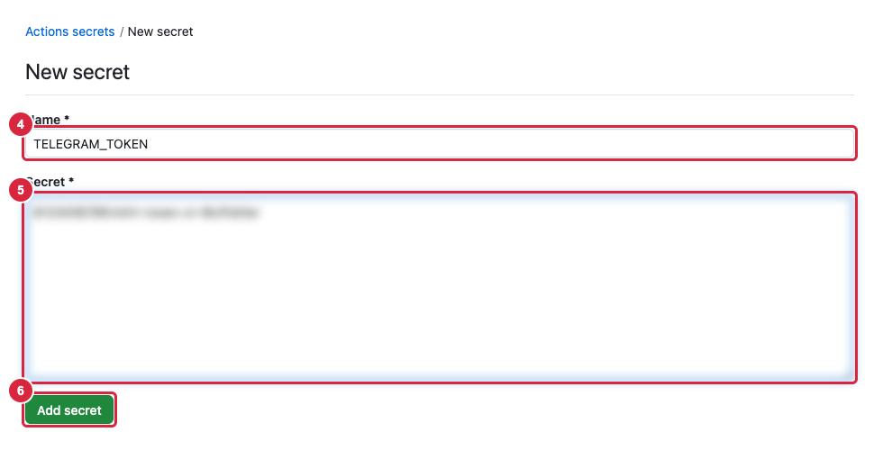
Новый секрет; значение на кадре размыто - Создайте секрет с номером чата
Снова нажмите New repository secret. Name —
TELEGRAM_CHAT_ID, Secret — номер чата из ответаgetUpdatesв автоматизации модуля 1. В списке появились два секрета; их значения GitHub больше не показывает, их можно только заменить кнопкой с карандашом.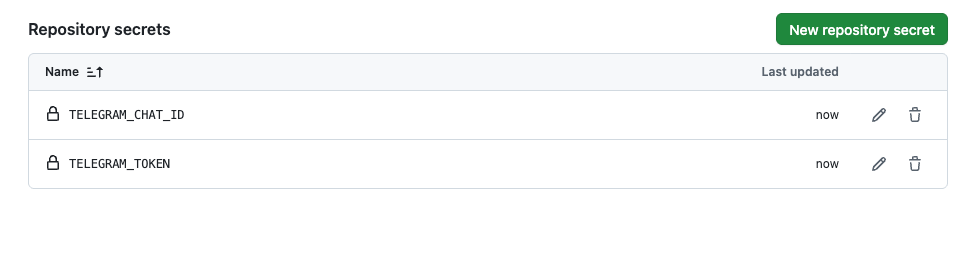
Два секрета репозитория - Отправьте изменения
В терминале VS Code в папке
monitoring:Терминал · папка monitoring git pull git add . git commit -m "Оповещение в Telegram" git push
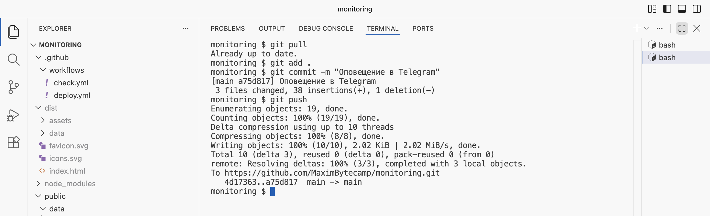
main" loading="lazy">Скрипт, конвейер и список отправлены
Секреты заданы, код на GitHub. Остаётся запустить проверку.
§4Проверка: два запуска
ДелаемЗапускаем ночную проверку вручную
- Первый запуск
На вкладке Actions выберите «Ночная проверка сайтов» (1) и нажмите Run workflow (2), в окне — снова Run workflow. В списке видна и проверка по расписанию: ночной запуск №4 с пометкой Scheduled начался в 05:46 по Москве вместо 00:00.
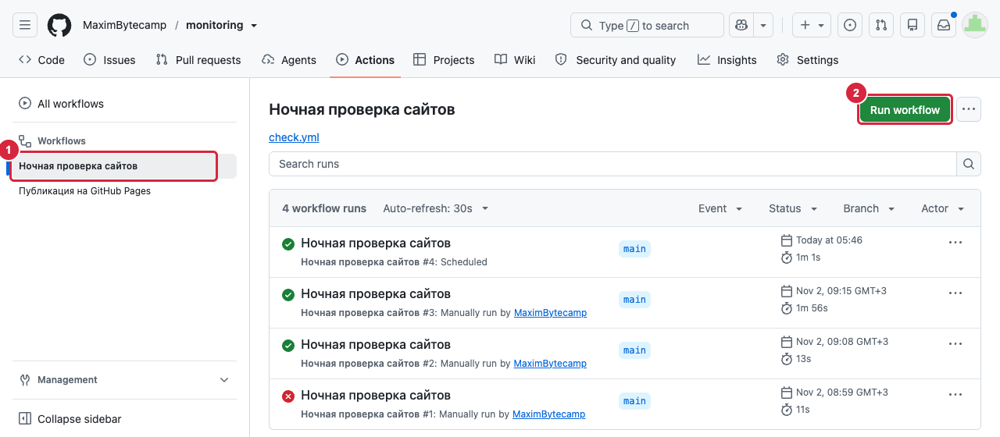
Ручной запуск и ночной запуск №4 по расписанию - Откройте журнал
Когда появится зелёная галочка, откройте запуск, задание
checkи шаг «Проверить сайты». Нажмите на строку «Run node scripts/check.mjs», чтобы раскрыть её. Секреты в журнале заменены на***. «Проверка оповещения» —FAIL 404, последняя строка —Telegram: 200.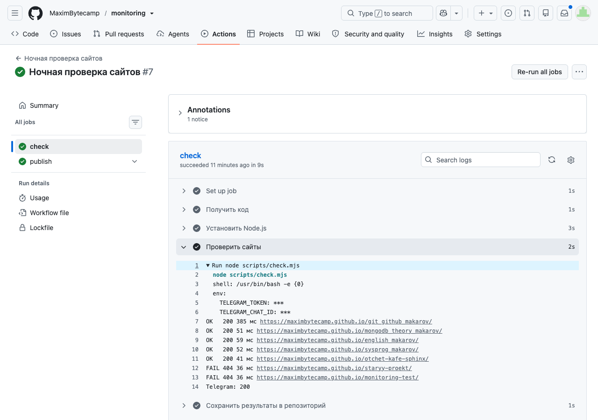
Сообщение отправлено: Telegram ответил 200 - Проверьте Telegram
В чате с ботом — сообщение «Ночная проверка сайтов» со строкой «🔴 Не открывается: Проверка оповещения · 404» и адресом сайта. «Старого проекта» в сообщении нет: он не открывался и в прошлой проверке.
- Второй запуск
Запустите проверку ещё раз. В журнале шага те же два
FAIL 404, но последняя строка — «Изменений нет, сообщение не отправлено». Новых сообщений в Telegram нет.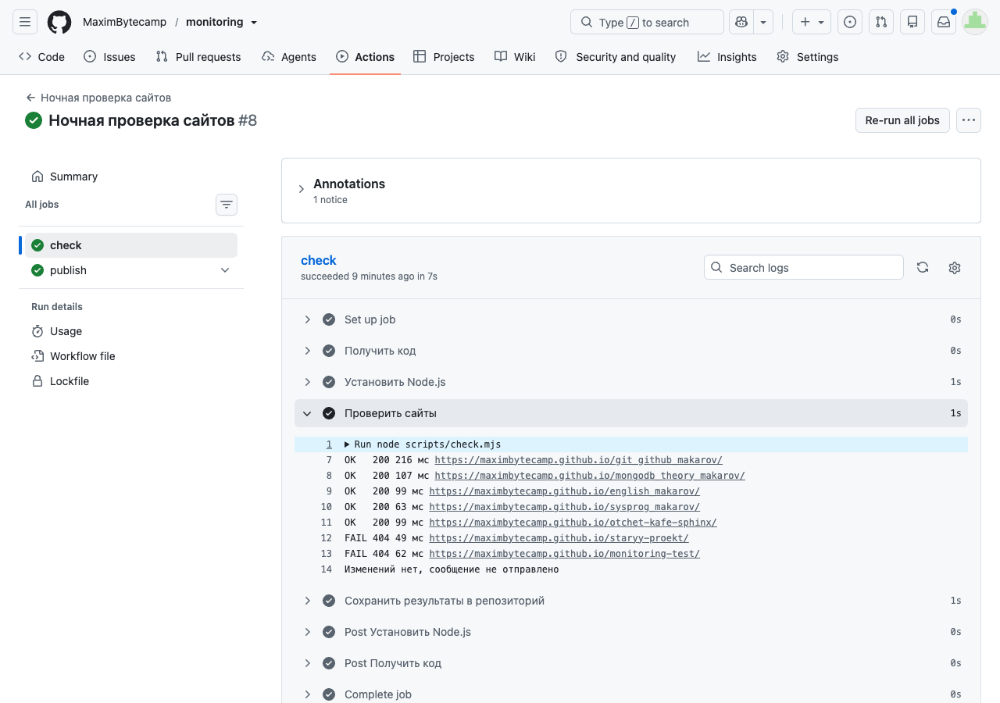
Без изменений сообщения нет - Уберите тестовый сайт
Удалите строку «Проверка оповещения» из
public/data/sites.jsonи запятую после предыдущей строки. Отправьте изменение;git pullзаберёт результаты двух проверок от бота.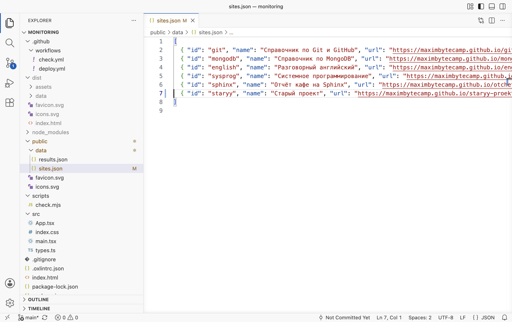
Список без тестового сайта Терминал · папка monitoring git pull git add . git commit -m "Тестовый сайт убран из списка" git push
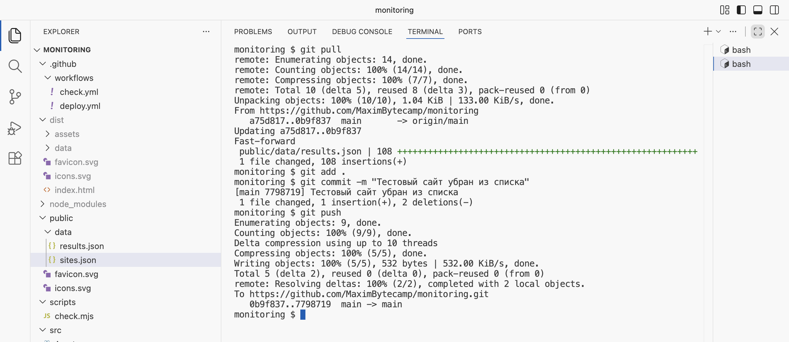
Список снова из шести сайтов Сайта нет в новой проверке, поэтому строки «Снова работает» о нём не будет: сообщение пишется только о сайтах из списка.
РазбираемсяЧто показали два запуска
В первом запуске у «Проверки оповещения» не было прошлого результата, и сайт попал в сообщение как новая неисправность. «Старый проект» не открывался и в ночной проверке №4, поэтому скрипт о нём не писал. Во втором запуске прошлая проверка — первый запуск, оба сайта не открывались и тогда, и сообщение не отправлено. Если сайт однокурсника пропадёт ночью, придёт одно сообщение, а когда сайт снова заработает — второе.
§5Частые ошибки
Сообщения получены в журнале шага «Проверить сайты» на GitHub и при запуске скрипта на компьютере.
| Что видно | Почему | Что сделать |
|---|---|---|
| «Секреты Telegram не заданы, сообщение не отправлено» в журнале GitHub | Секрета нет, имя секрета в настройках отличается от имени в check.yml или в шаге нет раздела env | Сверить имена TELEGRAM_TOKEN и TELEGRAM_CHAT_ID в настройках и в check.yml |
То же сообщение при node scripts/check.mjs на компьютере | Переменных окружения на компьютере нет | Ничего: отправка проверяется запуском на GitHub |
Telegram: 401 | Неверный токен: в секрете лишний пробел или токен от другого бота | Заменить секрет, скопировав токен из сообщения @BotFather |
Telegram: 400 | Номер чата неверный: Telegram отвечает «Bad Request: chat not found» | Написать боту, получить номер чата через getUpdates и заменить секрет |
| «Изменений нет», хотя сайт не открывается | Сайт не открывался и в прошлой проверке: о нём уже сообщали | Так и задумано; текущее состояние показывает монитор |
§6Проверьте себя
Почему токен бота нельзя записать прямо в check.mjs?
Репозиторий публичный: код и вся история коммитов видны всем, и любой сможет отправлять сообщения от имени бота. Секрет хранится в настройках зашифрованным и в коде не появляется.
Как значение секрета попадает в process.env?
Раздел env шага задаёт переменную окружения, а ${{ secrets.TELEGRAM_TOKEN }} GitHub заменяет значением секрета перед запуском шага.
Почему прошлая проверка — history[1]?
К моменту сравнения новая проверка уже добавлена в начало истории и стоит на месте [0].
Сайт не открывался три ночи подряд. Сколько сообщений придёт?
Одно — после первой ночи. Во вторую и третью ночь состояние не меняется.
Как получать сообщение «всё работает» каждое утро, даже без изменений?
Отправлять сообщение и в ветке без изменений: вместо console.log('Изменений нет…') вызвать notify с текстом о том, что все сайты в прежнем состоянии.
Шпаргалка
env: TELEGRAM_TOKEN: ${{ secrets.TELEGRAM_TOKEN }}const { TELEGRAM_TOKEN } = process.envPOST https://api.telegram.org/bot<токен>/sendMessage, тело { chat_id, text }history[1]ok сейчас и в прошлый разИтог
Ночная проверка присылает сообщение в Telegram через Bot API. Токен бота и номер чата хранятся в секретах репозитория, конвейер передаёт их шагу через env, скрипт читает их из process.env, а в журнале запуска они видны как ***. Скрипт сравнивает новую проверку с прошлой и пишет только о сайтах, которые перестали открываться или снова заработали; без изменений сообщения нет. На двух ручных запусках тестовый сайт с ошибкой в адресе дал одно сообщение, повторная проверка — ни одного.